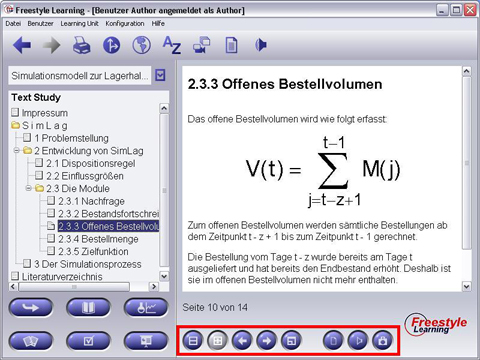

In der Interaktionsleiste unterhalb des Anzeigebereiches finden Sie einige blaue Schaltflächen, die Ihnen aktive Interaktionen mit dem präsentierten Lerninhalt erlauben. Einige Schaltflächen sind in mehreren Views vorhanden (Standard-Interaktionsschaltflächen), andere sind spezifisch für eine bestimmte View.
